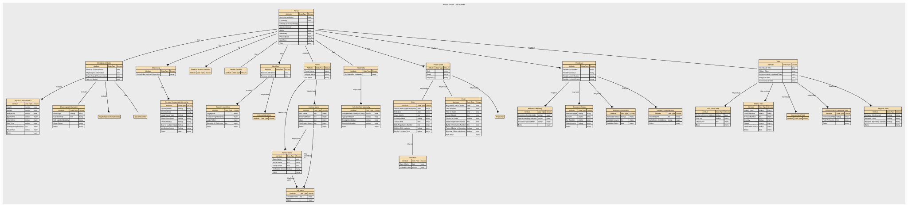

logical model: Person Domain, Logical Model
Version: Logical Model:Person Domain, Logical Model V1 02/06/2026
Created: 2 June 2026
Person Logical Domain Model.
Model ID: DEPoP013.
Linking concepts to data items in the Person Domain.
Published as part of the Person Data Standard (Alpha), PRG202604.
An individual human who participates in business activities or interactions. The Person concept represents the identity of a human being independent of the roles they may perform, the relationships they may have, or the contexts in which they act.
The Department for Science, Innovation and Technology

Renditions
| Format | Link |
|---|---|
| Graphviz DOT | dot.txt |
| DSD JSON | dsd.json |
| CSV | logicalmodel.csv |
| RDF Schema (Turtle) | logicalmodel.ttl |
| XSD | Person_Domain,_Logical_Model.xsd |
Index
Entities
| Entity | Description |
|---|---|
| Biological Attributes | Inherent physical, physiological, or genetic characteristics of a Natural Person that arise from biology rather than social, cultural, or legal identity. Biological Attributes describe intrinsic properties of the human body and are distinct from personal identity attributes (e.g., name), demographic identity (e.g. ethnicity), or legal identity (e.g, citizenship). Implements Concepts • Biological Attributes — Inherent physical, physiological, or genetic characteristics of a Natural Person… |
| Biometric Identifiers | Biometric Identifiers are data elements that capture a person’s unique biological or behavioural traits for the purpose of identification, authentication, or verification. This includes raw biometric measurements (e.g., fingerprints), biometric templates derived from those measurements, and any metadata required to process or match them. Implements Concepts • Biometric Identifiers — Biometric Identifiers are data elements that capture a person’s unique biologica… |
| Birth | Birth covers data elements that record the circumstances of an individual’s birth. It includes factual, verifiable attributes such as date, place, and conditions of birth, along with any official registration details issued by an authority. Implements Concepts • Birth — Birth covers data elements that record the circumstances of an individual’s birt… |
| Birth Date | This is the structure defining date of birth and how it's been defined. Implements Concepts • Date of Birth — Date of Birth (DOB) is the official calendar date on which an individual was bor… |
| Citizenship | A person’s legal relationship with a state, which grants rights, protections, and obligations under that state’s laws. In a conceptual model, Citizenship is a legal‑status attribute of a Natural Person that identifies the country or sovereign entity recognising them as a citizen. Implements Concepts • Citizenship — A person’s legal relationship with a state, which grants rights, protections, an… |
| Civil Social Titles | Civil Social Titles are non‑professional, non‑noble honorifics used in everyday civil contexts to address or refer to individuals (e.g., Mr, Mrs, Miss, Ms, Mx). They facilitate respectful forms of address, correspondence, and identity presentation but do not indicate rank, role, or qualification. Implements Concepts • Civil Social Titles — Civil Social Titles are non‑professional, non‑noble honorifics used in everyday … |
| Death | The factual, legally recognised details surrounding the end of an individual’s life. It includes authoritative attributes such as the date, time, and location of death, as well as official registration information issued by a competent authority. This event provides a definitive closure point for identity records and downstream operational processes. Implements Concepts • Death — The factual, legally recognised details surrounding the end of an individual’s l… |
| Ethnicity (Cultural identify) | Ethnicity is a cultural identity concept that reflects a person’s connection to a group or community defined by shared heritage, ancestry, traditions, culture, language, and/or social experience. It describes how people identify culturally, socially, or historically, not their legal status or nationality. In a conceptual model, Ethnicity is a self‑identified, culturally grounded attribute of a Natural Person and is separate from Nationality (cultural/national belonging) and Citizenship (legal status). Implements Concepts • Ethnicity (Cultural identify) — Ethnicity is a cultural identity concept that reflects a person’s connection to … |
| Formal Name | Formal Name represents the official, legally recognised version of an individual’s name, as recorded by an authoritative source such as a civil registry, passport, birth certificate, or government-issued identity document. It is the canonical name used in contexts requiring legal identity, compliance, or formal verification. Implements Concepts • Formal Name — Formal Name represents the official, legally recognised version of an individual… |
| Formally Recognised Citizenship | Formally Recognised Citizenship captures a person’s legally conferred nationality status as recognised by a sovereign state or authority. It reflects official citizenship(s) in force, with provenance to authoritative sources (e.g., passport, national identity registry, certificate of naturalisation). Implements Concepts • Formally Recognised Citizenship — Formally Recognised Citizenship captures a person’s legally conferred nationalit… |
| Full Name | Full Name represents a combined or displayable expression of a person’s name. It may be formed from formal name components, informal name components, or both, depending on context. In some cases, Full Name may reflect the authoritative identity as it is presented or used. However, it is not the authoritative structured identity record and must not replace Formal Name or Informal Name in the underlying model. Implements Concepts • Full Name — Full Name represents a combined or displayable expression of a person’s name. It… |
| Genetic Ethnicity | A scientific estimate of a person’s ancestral origins based on the analysis of their DNA. It represents inferred biological population groups, expressed as probabilities or percentages, and reflects patterns of genetic similarity shared with reference populations. It does not represent cultural identity, heritage, nationality, or citizenship—it is a biologically inferred attribute, not a social or legal one. Implements Concepts • Genetic Ethnicity — A scientific estimate of a person’s ancestral origins based on the analysis of t… |
| Identifiers | Unique references that distinguish one Natural Person from all others within a given context, system, or jurisdiction. They are assigned by an authority (e.g., a government, organisation, or system) for the purpose of uniquely recognising, managing, or relating to that person across processes and datasets. Identifiers are not the person, and they are not personal attributes (like name, gender, or date of birth). They are tokens that point to the person. Implements Concepts • Identifiers — Unique references that distinguish one Natural Person from all others within a g… |
| Informal Name | The Informal Name sub‑domain captures non‑legal, non‑official name forms that an individual uses in everyday social, cultural, or operational contexts. These names support familiarity, personal preference, and communication ease but hold no legal standing and should not be used for identity verification or regulatory decisioning. Implements Concepts • Informal Name — The Informal Name sub‑domain captures non‑legal, non‑official name forms that an… |
| Military Titles | Military Titles represent the official ranks, grades, and honorific forms of address assigned to individuals within armed forces or uniformed services (e.g., Lieutenant, Captain, Colonel). These titles indicate hierarchical position, authority, and command responsibility. They are role‑based, not personal, and may change throughout a career. Implements Concepts • Military Titles — Military Titles represent the official ranks, grades, and honorific forms of add… |
| Name | A textual identifier used to refer to or represent a Natural Person, Organisation, Place, or other entity. In conceptual modelling, a Name describes how something is known or addressed, not what it is. Names may consist of multiple components, may vary by context, and may change over time. At least one Formal Name is required for a Person to ensure a minimum identity representation, while Informal Name remains optional. Implements Concepts • Name — A textual identifier used to refer to or represent a Natural Person, Organisatio… |
| Nationality | Describes how an individual identifies with one or more nations, countries, or national groups. In the Person domain, nationality is treated as a matter of personal identity and self‑expression, rather than legal status. Formal legal nationality or citizenship is modelled separately under Citizenship. Implements Concepts • Nationality — A person’s formal affiliation to a nation or cultural identity, typically associ… |
| Person | An individual human who participates in business activities or interactions. The Person concept represents the identity of a human being independent of the roles they may perform, the relationships they may have, or the contexts in which they act. Implements Concepts • Person — An individual human who participates in business activities or interactions. The… |
| Person Event | An occurrence or change in circumstance that happens to a specific Natural Person at a point in time (or over a period of time) and is relevant to business processes, reporting, or understanding that person’s history. It captures something that happens to or is experienced by the person, rather than a role or relationship they hold. Implements Concepts • Person Event — An occurrence or change in circumstance that happens to a specific Natural Perso… |
| Personal Identifiers | Personal Identifier IDs are unique identifiers assigned to a person by an authority or system for identification, linkage, or entitlement. This domain includes government‑issued IDs (e.g., national IDs), organisational master IDs, and cross‑system surrogate keys used to unambiguously reference a person across processes and systems. Implements Concepts • Personal Identifiers — Personal Identifier IDs are unique identifiers assigned to a person by an author… |
| Physical Characteristics | Physical Characteristics refers to observable, measurable, and non‑biometric biological traits of an individual. These features describe physical form or appearance but do not uniquely identify a person on their own. The sub‑domain includes raw descriptive attributes and standardised measurements recorded for classification, profiling, or operational purposes. Implements Concepts • Physical Characteristics — Physical Characteristics refers to observable, measurable, and non‑biometric bio… |
| Physiological Information | Physiological Information describes non‑clinical, non‑diagnostic information about an individual’s biological and bodily functions. It includes physiological or biologically‑derived attributes such as blood type, genetic traits, self‑reported disability, and organ donor status. These attributes are descriptive and operational in nature, rather than cognitive, emotional, or behavioural characteristics, and do not uniquely identify a person Implements Concepts • Physiological Information — Physiological Information in the Person domain represents non‑clinical, non‑diag… |
| Post-Nominal Titles | Post‑Nominal Titles are letters placed after a person’s name that denote orders, decorations, honours, academic degrees, professional memberships, licensure, or fellowships (e.g., OBE, PhD, FRCS, CPA). They confer recognition or qualification, not forms of address, and are typically governed by awarding bodies with formal usage rules. Implements Concepts • Post-Nominal Titles — Post‑Nominal Titles are letters placed after a person’s name that denote orders,… |
| Pregnancy | Pregnancy is a time‑bound life event that records the fact that an individual is pregnant, including the start, expected milestones, and outcome of the pregnancy where relevant for operational, safeguarding, or service‑eligibility purposes. It captures non‑clinical, administrative facts only—not medical diagnoses, treatment notes, or clinical assessments. Implements Concepts • Pregnancy — Pregnancy is a time‑bound life event that records the fact that an individual is… |
| Professional Occupational Titles | Professional Occupational Titles are titles or prefixes associated with a person’s profession, occupation, or accredited role, used to indicate an individual’s professional standing, qualification, or occupational function. They are not academic degrees or post‑nominals, but pre‑nominal markers tied to recognised professions (e.g., Dr, Prof, Eng, Nurse, Architect). These titles support appropriate address, professional recognition, and role‑based communication. Implements Concepts • Professional Occupational Titles — Professional Occupational Titles are titles or prefixes associated with a person… |
| Psychological Characteristics | Psychological Characteristics refer to non‑clinical, non‑diagnostic attributes that describe an individual’s typical cognitive, emotional, and behavioural tendencies. These characteristics represent stable patterns of thinking and behaviour, not mental health conditions, and do not uniquely identify a person. They may include personality traits, cognitive style descriptors, and general behavioural dispositions. |
| Religious Titles | Religious Titles are formal honorifics, ranks, or styles of address associated with roles, positions, or consecrated statuses within recognised religious traditions (e.g., Reverend, Rabbi, Imam, Sister, Monsignor, Guru). These titles indicate spiritual authority, clerical office, or religious vocation, and are used in formal or community contexts to show respect and denote role-based standing. Implements Concepts • Religious Titles — Religious Titles are formal honorifics, ranks, or styles of address associated w… |
| Residence | A time‑bounded assertion that a Person resides at a Location with a specified Residence. Includes legal/primary residence, secondary residences, historical changes, validation against jurisdictional reference data. Excludes temporary contact addresses, delivery addresses, lodging/travel events, property ownership details (unless used to evidence residence). Implements Concepts • Residence — A time‑bounded assertion that a Person resides at a Location with a specified Re… |
| Residence Handling | Residence Handling refers to the governed rules, behaviours, and constraints that define how residency data may be collected, processed, stored, shared, updated, retained, secured, and used within a data domain. Implements Concepts • Residence Handling — Residence Handling refers to the governed rules, behaviours, and constraints tha… |
| Residence Status | Residence Type specifies the role, purpose, and legal/operational meaning of a residency relationship between a place or property and a person. Implements Concepts • Residence Status — Residence Type specifies the role, purpose, and legal/operational meaning of a r… |
| Residence Verification | Residence Verification describes the degree of confidence, method, and evidence supporting the assertion that a Party (Person or Legal Entity) resides at a given Location. Implements Concepts • Residence Verification — Residence Verification describes the degree of confidence, method, and evidence … |
| Residence identification | Residence Identification refers uniquely and consistently identify, reference, and distinguish one residence fact from another within a Party domain. Implements Concepts • Residence identification — Residence Identification refers uniquely and consistently identify, reference, a… |
| Self-Identified Nationality | Self‑Identified Nationality represents how an individual personally defines or expresses their own national identity, independent of citizenship, passport, or legal status. It reflects cultural affiliation, heritage, or personal identification, and is self‑reported, non‑authoritative, and used solely for demographic, engagement, or inclusion‑related purposes. This attribute does not confer any legal rights or obligations. Implements Concepts • Self-Identified Nationality — Self‑Identified Nationality represents how an individual personally defines or e… |
| Sex and Gender | The Sex and Gender sub‑domain covers data elements that describe an individual’s biological sex characteristics and gender identity attributes for the purposes of identity management, demographic classification, and service personalisation. It differentiates between sex‑related biological attributes and self‑described gender identity, reflecting both regulatory expectations and modern data‑standards practice. It also include how these relate to and define Legal Sex. |
| Titles | An honorific or form of address associated with a Natural Person, used to indicate courtesy, social status, professional standing, or preference. It does not identify the person and does not imply any legal role or relationship—it's simply an attribute describing how the person chooses (or is required) to be addressed. Implements Concepts • Titles — An honorific or form of address associated with a Natural Person, used to indica… |